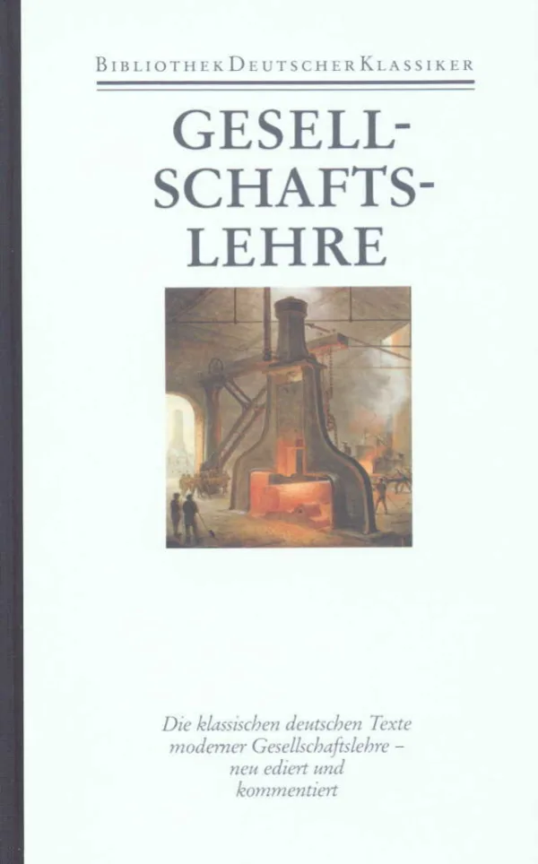
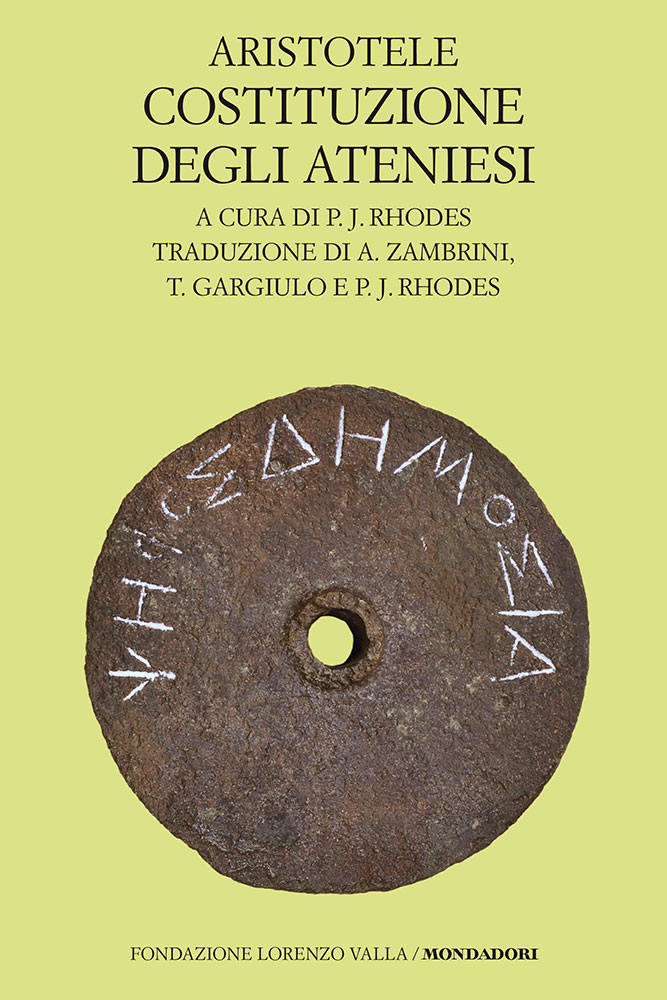
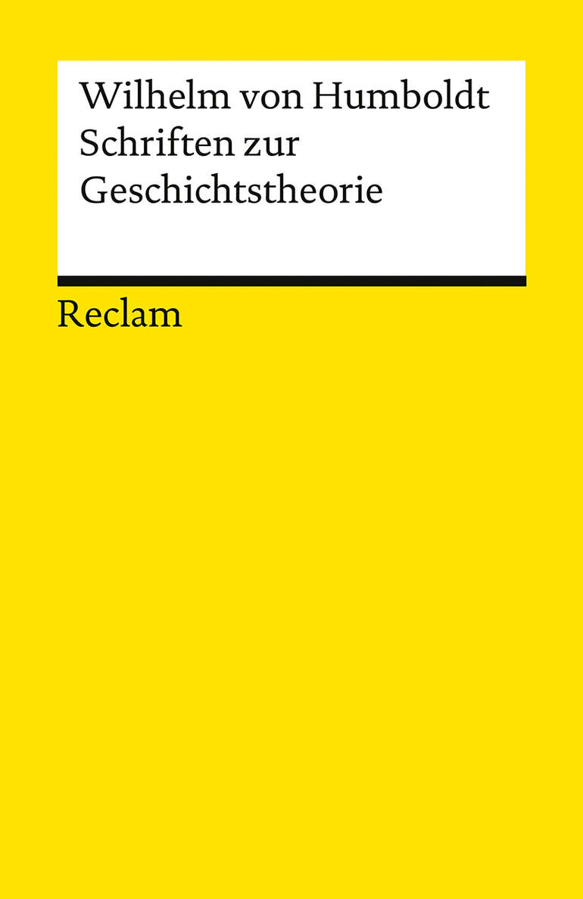
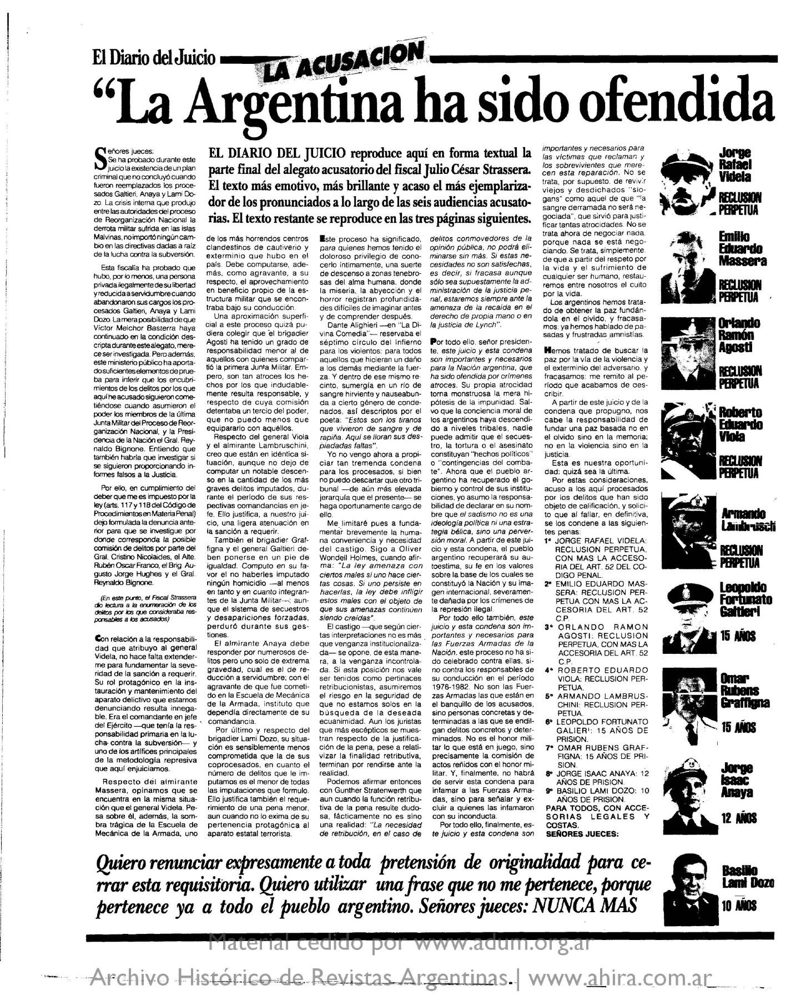

32:17 · 6 OPERE
Appunti per una ricostruzione dello Stato di diritto.
Il filo del discorso
Dr Divago propone di ricostruire lo Stato di diritto ripartendo dal rapporto fra ragione, legge e responsabilità. Il punto di avvio è Humboldt, evocato insieme ai precedenti greci della riflessione costituzionale; alcuni passi, però, provengono da testi diversi e non affermano tutti il principio giuridico che il relatore ne ricava. Il caso centrale è il processo del 1985 ai comandanti delle giunte argentine.
Leggi la sintesi completaRiduci la sintesi
La ricostruzione del lavoro di Julio César Strassera mette in rilievo la raccolta delle testimonianze, la difficoltà di perseguire apparati compromessi e la necessità di restituire fiducia alle istituzioni attraverso la giustizia. Il passaggio sul sadismo come perversione morale e la chiusa Nunca más diventano i cardini di un’etica che rifiuta la giustificazione politica della tortura e dell’uccisione intenzionale di civili. Il relatore applica questa esigenza sia alla propria critica della gestione pandemica sia ai crimini di Hamas, con un confronto che non dimostra identità storica o giuridica fra situazioni differenti. Il memoriale davanti alla casa natale di Hitler serve infine a interrogare l’uso attuale delle parole pace, libertà e democrazia. La scheda corregge la cronologia argentina, distingue il tribunale federale dalla Corte costituzionale e separa una proposta morale universale dagli accertamenti sulle responsabilità individuali, che richiedono prove e garanzie processuali.
I libri nel discorso

Ideen über Staatsverfassung, durch die neue Französische Constitution veranlasst
Note sul riferimento
Copertina della raccolta: COPERTINA DELLA RACCOLTA Gesellschaftslehre, a cura di Eckart Pankoke, Deutscher Klassiker Verlag, Bibliothek deutscher Klassiker, edizione Leinen del 2 dicembre 1991,1266 pagine, ISBN 9783618667803. La raccolta contiene la lettera del 1791. Il catalogo Orell Füssli descrive anche la variante in pelle ISBN 9783618667858: qui è usata la copertina ufficiale della variante in tela, non si confondono i due ISBN.
Immagine intera ufficiale: Gesellschaftslehre, Bibliothek deutscher Klassiker, scena di una macchina industriale. L’assenza del nome Humboldt in copertina dipende dalla natura antologica della raccolta; la presenza del testo è verificata nell’indice.
Titolo tedesco e lettera 1791 sulla costituzione, pronunciati con deformazioni della trascrizione automatica.

Costituzione degli Ateniesi
Note sul riferimento
Copertina: Fondazione Lorenzo Valla/Mondadori,3 novembre 2016,472 pagine nel catalogo editoriale, a cura di P. J. Rhodes, traduzione di Andrea Zambrini, Tristano Gargiulo e P. J. Rhodes, ISBN 9788804671695. Copertina verde chiaro con disco per il voto. Edizione non identificata nel video.
Immagine autentica dell’opera, controllata visivamente; l’edizione di riferimento non è attribuita al filmato.
Costituzione degli Ateniesi e Aristotele nell’elenco dei precedenti del discorso sullo Stato.

Costituzione degli Ateniesi
Identificazione probabile
Note sul riferimento
Copertina: Fondazione Lorenzo Valla/Mondadori,5 settembre 2018,312 pagine, a cura di Giuseppe Serra, con un saggio di Luciano Canfora, ISBN 9788804688839. Copertina verde chiaro con rilievo di rematori. La datazione antica e la paternità restano discusse; non si rende certo un autore individuale.
Immagine autentica dell’opera, controllata visivamente; l’edizione di riferimento non è attribuita al filmato.
Pseudo-Senofonte deformato nella trascrizione automatica; probabile rinvio all’omonimo pamphlet sulla costituzione ateniese.

Über die Gesetze der Entwicklung der menschlichen Kräfte
Identificazione probabile
Note sul riferimento
Copertina della raccolta: COPERTINA DELLA RACCOLTA Schriften zur Geschichtstheorie, Reclam Universal-Bibliothek 14167,16 luglio 2021,151 pagine, a cura di Jörn Rüsen e Angelika Wulff, postfazione di Rüsen, ISBN 9783150141670. Il frammento compare per primo nell’indice ufficiale. Non si attribuisce questa raccolta al relatore.
Copertina ufficiale Reclam gialla con autore e titolo della raccolta, ispezionata per intero. Il manoscritto del frammento era privo di titolo; la sua collocazione cronologica è una ricostruzione editoriale, non una data autografa qui certificata.
Frase su Vernunftwahrheit e gleichförmiges Gesetz: fonte individuata in un frammento diverso dalla lettera, titolo non pronunciato.

Conclusione dell’alegato nel Juicio a las Juntas
Note sul riferimento
Pagina del periodico: PAGINA DEL PERIODICO che riproduce il documento: El Diario del Juicio, anno I, n.18, Editorial Perfil,24 settembre 1985, pagina PDF 2, titolo La Argentina ha sido ofendida. La pagina contiene la conclusione, la frase sul sadismo e la chiusa Nunca más. Facsimile AHIRA/ADUM con filigrana conservata; non è una copertina di libro né il frontespizio autografo della procura.
Pagina del documento originale. Si distingue la requisitoria dalle pene effettivamente inflitte con la sentenza.
Strassera, il sadismo come perversione morale e la chiusa Nunca más: confronto con riproduzione del 18 settembre 1985.
Terrore dallo spazio profondo (Invasion of the Body Snatchers)
Identificazione probabile
Note sul riferimento
Copertina dell’edizione Blu-ray: COPERTINA DELL’EDIZIONE BLU-RAY Arrow Video, Invasion of the Body Snatchers, film 1978,115 minuti, Philip Kaufman, con Donald Sutherland, Brooke Adams, Jeff Goldblum e Veronica Cartwright. Immagine ufficiale della confezione con artwork e marchio Arrow; non una locandina d’epoca né un fotogramma.
Ispezionata la confezione intera fornita dal distributore: titolo inglese, illustrazione dei protagonisti, marchio Arrow e supporto Blu-ray. Il racconto di omologazione è usato metaforicamente dal relatore, non come fatto biologico o psicologico.
Il ritorno degli ultracorpi, richiamo metaforico: probabile film 1978, nessuna scena letta o verificata.